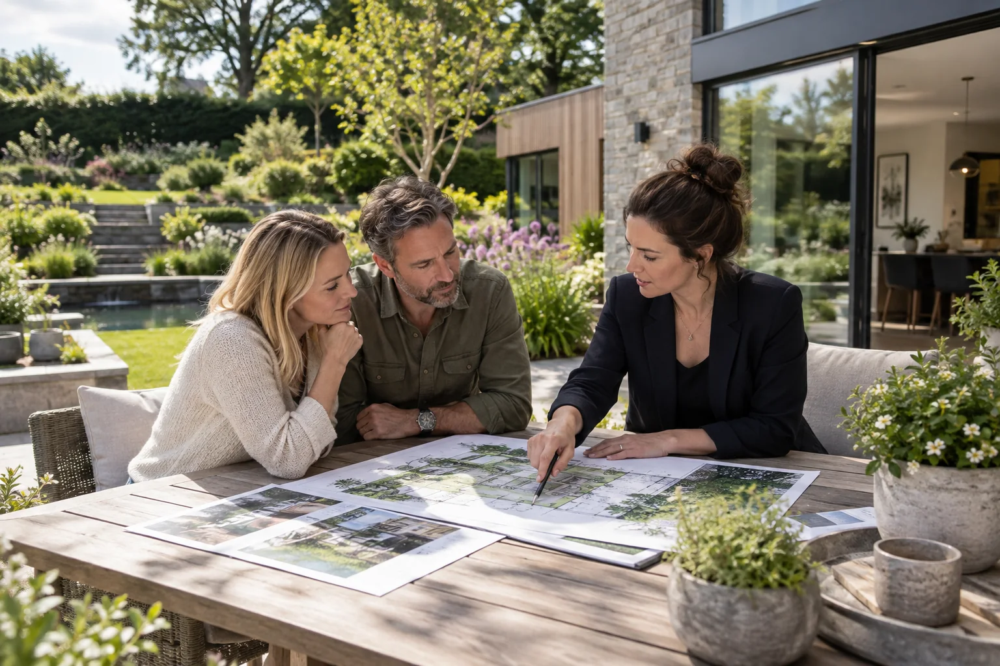
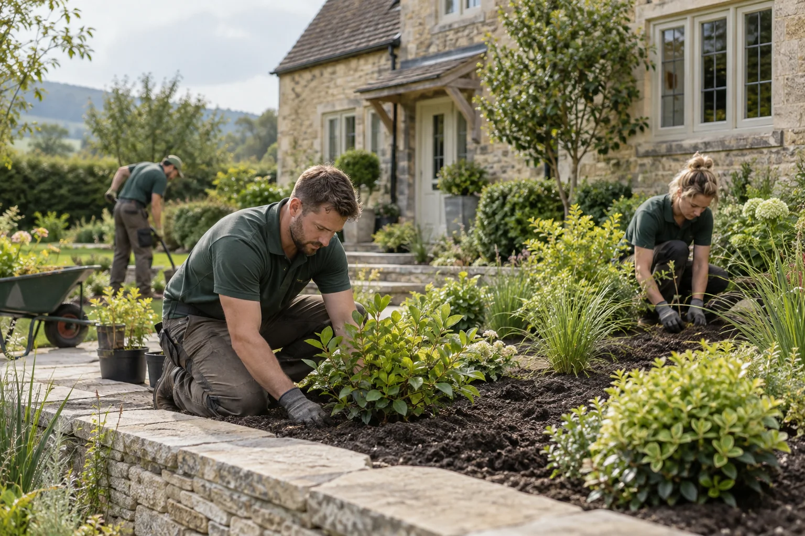
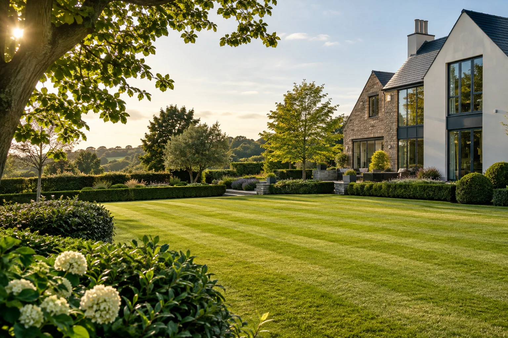
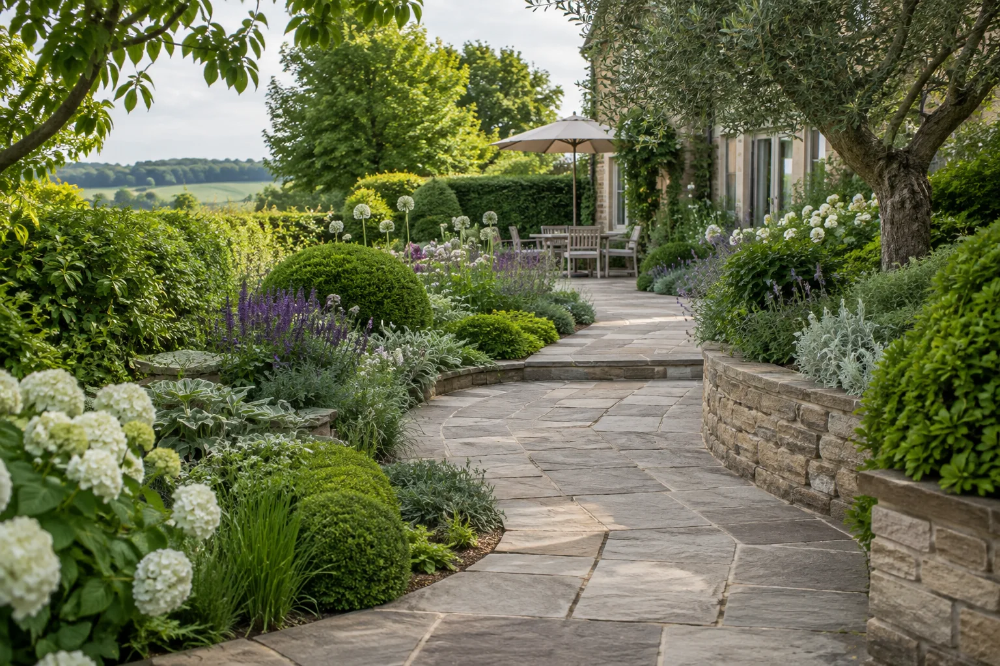
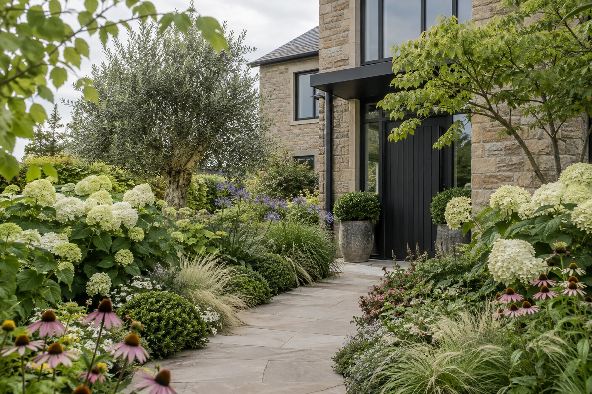
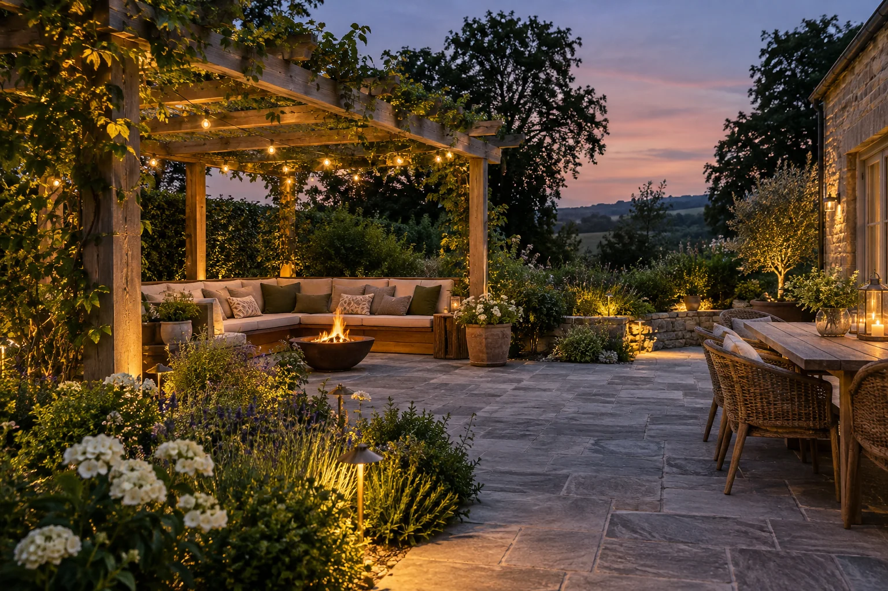
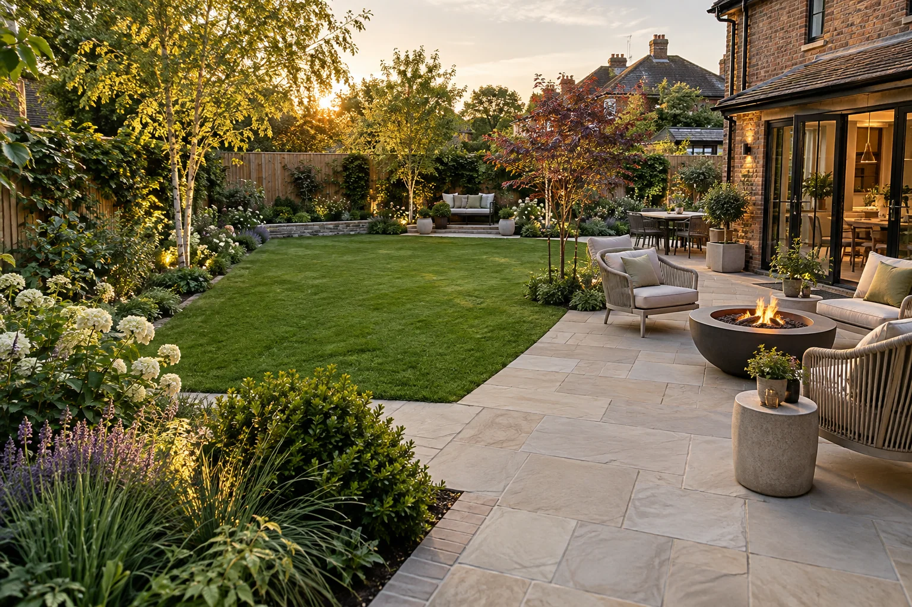
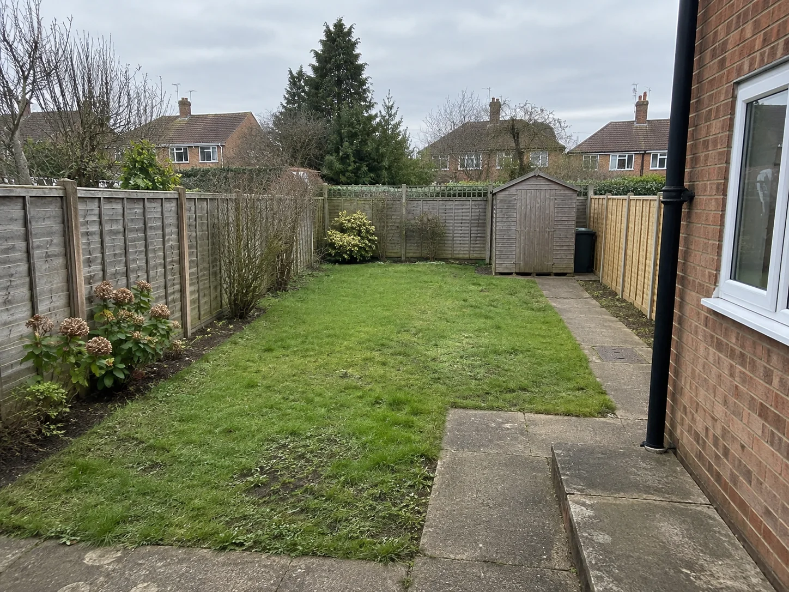

DESIGN-LEDLandscape design
Outdoor plans shaped around your home, your lifestyle and the way you want to use every corner.
Explore this serviceFrom the first sketch to the finishing details, we shape gardens that feel as considered as the homes they surround.
From a complete garden redesign to the details that keep it looking its best, one experienced team brings the whole picture together.

DESIGN-LEDOutdoor plans shaped around your home, your lifestyle and the way you want to use every corner.
Explore this service
BUILT WITH CAREPlanting, groundworks and finishing details brought together with a careful eye for the whole space.
Explore this service
SEASON AFTER SEASONPractical, dependable care for lawns, borders and outdoor spaces that deserve to stay beautiful.
Explore this service
LASTING MATERIALSPaths, patios and considered hardscaping that bring structure and character to your garden.
Explore this service
NATURAL BEAUTYThoughtful planting palettes with year-round interest, texture and a sense of place.
Explore this service
ROOM TO GATHERInviting places to dine, unwind and make the most of long evenings outdoors.
Explore this serviceA garden can become more than a view from the window. Explore how a thoughtful plan can turn an underused plot into a place you want to spend time.


Great outdoor spaces come from a clear plan and a team that pays attention. This demo shows how a landscaper can communicate their approach with confidence.
A straightforward schedule and updates you can actually use.
Know what is happening, what comes next and who to ask.
Materials, planting and finishes considered as one whole.
A clear scope from the first conversation to the final walk-through.
A visual example of the kind of work a landscape business can showcase. Images below are concept photography, not completed client projects.
Simple steps, from the first idea to the final detail.
Share the space, the priorities and what you would love it to become.
A considered direction that fits your property, needs and budget.
Enjoy a thoughtfully finished space designed for years to come.
This area demonstrates how genuine customer feedback could appear once a business has permission to publish it. The examples below are placeholders, not actual testimonials.
“Your real customer review could tell the story of how the finished garden changed the way they use their home.”
Sample review · replace before launch“This space can highlight communication, care and a smooth project experience in your customer’s own words.”
Sample review · replace before launch“A short, specific testimonial often says more than a long list of promises.”
Sample review · replace before launchTell us a little about the project you have in mind. In a real client website, this form would connect to a lead inbox or CRM.